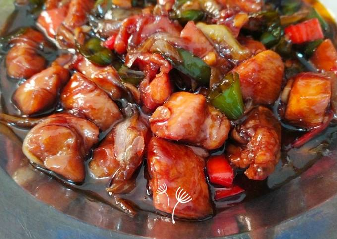

Ayam Saus Tiram

Description
Awal pekan biasanya menjadi waktu yang sibuk bagi banyak orang. Waktu masak yang singkat, dapat diakali dengan membuat lauk dengan bahan sederhana.
Makanan seperti ayam tumis saus tiram ini terbilang praktis, karena bahannya bisa jadi sudah ada didapur kamu.
Ingredients
- 1/2 ekor ayam, dipotong 10
- 1/2 sendok makan air jeruk nipis
- 1/2 sendok teh garam
- 5 butir bawang merah, diiris
- 2 siung bawang putih, diiris
- 1 buah tomat, dipotong-potong
- 5 buah cabai rawit merah, utuh
- 2 sendok makan saus tiram
- 1 sendok makan kecap manis
- 1/4 sendok teh merica bubuk
- 400 ml air
- 2 sendok makan minyak uuntuk menumis